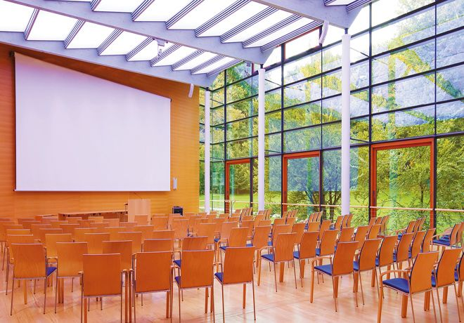
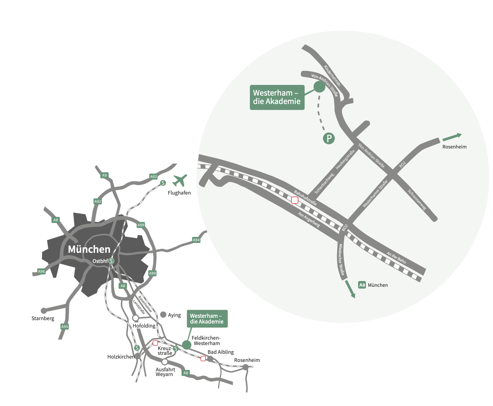

Mathematical results of many-body quantum systemsIHK Akademie Westerham - July 5-7, 2023 |
|
This meeting aims at bringing together many talented PhD students, postdocs, and young but already established researchers in mathematical physics, to present new results and to initiate new collaborations. |
|
Invited Speakers
Organizers
|
  
|
|
Program: Soon available Registration: Please send an email to Edith Höchst. Please let us know if you want to book a room in the conference venue. Practical information: The arrival in Westerham is on July 5th at around 12.00 pm, lunch at .... The conference starts on July 5th and ends on July 7th at lunch time. |
 |
Conference Venue: Westerham die Akademie Direction: The Westerham Academy is located about 35 kilometers south of Munich in the district of Feldkirchen-Westerham. The property is located on the edge of the forest on a hill with a fantastic view of the Alps. The Westerham Academy is easily accessible by public transport. From Munich Airport (Flughafen München „Franz Josef Strauß“) or Munich central station (München HBF) you can take a train to reach the station: Westerham train station. |
|
More info on the venue are available here
Link to the train tickets here |

All photos © IHK Akademie Westerham |